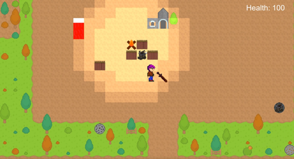

<link
  rel="stylesheet"
  href="https://use.fontawesome.com/releases/v5.8.2/css/all.css"
  integrity="sha384-oS3vJWv+0UjzBfQzYUhtDYW+Pj2yciDJxpsK1OYPAYjqT085Qq/1cq5FLXAZQ7Ay"
  crossorigin="anonymous"
/>

<link rel="preconnect" href="https://fonts.gstatic.com">
<link href="https://fonts.googleapis.com/css2?family=Roboto+Mono:wght@300&display=swap" rel="stylesheet">
<link href="https://fonts.googleapis.com/css2?family=Raleway:wght@600&display=swap" rel="stylesheet">
<link href="https://fonts.googleapis.com/css2?family=Roboto+Condensed:wght@300&display=swap" rel="stylesheet">
<link rel="stylesheet" href="info.css">

<head>
<meta name="viewport" content="width=device-width">
<title>TimothE2D Game Framework</title>
</head>

<main>
  <nav id="navbar">
    <h2 id = "projectTitle">TimothE2D Game Framework</h2>
    <a href="index.html">Back</a>
  </nav>

<div id="seperator"></div>
<h2>The Project</h2>
<p>The idea of the TimothE 2D project was to create a tilemap based 2D game framework that could be used to recreate a wide variety of projects within this genre. This project was undertaken as part of my Group Game Development module in my third year of university where we were tasked with creating a game framework and then creating a game within that framework. The timeframe for this was 6 months however at the start and end of this period we had a dedicated 3 weeks where this module would be only thing on our timetable and as such these were the dedicated development periods for this project. </p>
<h2>Why this project was chosen</h2>
<p>As previously stated this project was part of my GGD module at university. In our team consisting of 10 members, 8 programming students and 2 development students, we decided that given our rather limited 3d modelling and art experience that a 2d game would be the ideal project as the art can be simpler and will take less time. This was especially important as the art of the game was not a marked aspect of the project. Once we had decided on a 2D game we then started a discussion on what type of game we wanted to create and the general consensus came to an overhead, tile map based game that revolved around defending a farm you were building from hordes of bandits or raiders. </p>
<h2>Project Specifics</h2>
<p>Built in C++ using OpenGL 4.4, Dear ImGui, GLFW, FMOD</p>
<p>Built in 6 months. January 2022 - June 2022. With six dedicated weeks to the framework</p>
  <button><a href="https://github.com/Timothy-Needs-to-Die/TimothE" target="_blank">GitHub Repository</a></button>
  <div id = "body">
    <h2>Features</h2>
    <div id="seperator"></div>
      <div>
        <li>Tilemaps based on the tmx file format (created by the program Tiled)</li>
        <li>Originally used a custom tilemap and editor however this was abandoned due to time constraints.</li>
        <li>2D Collisions “trigger” collisions between objects and physical collisions between objects and tilemap collision points.</li>
        <li>Component based architecture</li>
        <li>A* Pathfinding</li>
        <li>“Unreal Engine” inspired Collision Channel System that allows collisions between compatible channels.</li>
        <li>Batch Renderer</li>
        <li>Scaleable UI Systems</li>
        <li>Spritesheets and animations</li>
        <li>A audio engine built using FMOD which allowed for multiple audio channels</li>
        <li>A easy to use save and load system for handling player attributes, was originally also used for storing component attributes when the project also involved a editor.</li>
        <li>“Stash”: This is where the player could stash various items at their hideout where they wouldn’t lose it if they died. </li>
        <div class="videoFrame-small"><p>A screenshot of the game created in TimothE2D</p></div>
        <div class="videoFrame-small"><p>A small demonstration of how the scene render function worked with the batch renderer</p></div>
        <div class="videoFrame-small"><p>A explanation of the collision channel system created for TimothE2D</p></div>
        <div class="videoFrame-small"><p>Basic demonstration of some text UI being laid out</p></div>
      </div>
    <div>
    </div>
    <div id = "seperator">
      <h2>What went well</h2>
      <div>
        <li>Created a playable and enjoyable prototype of the original game idea</li>
        <li>A relatively performant game could be created in this framework</li>
      </div>
      <h2>What didn't go well</h2>
      <div>
        <li>Lack of proper group communication</li>
        <li>Mix of framework and game logic</li>
        <li>Overscoping the project. The original project for TimothE 2D was a more game engine esque approach where we would have a editor with windows that would allow us to add new game objects to a scene and modify the attributes attached to them, these would then be saved and loaded by the engine. This ultimately fell through due to time constraints. </li>
        <li>Lots of “Set it and change it later” code.</li>
        <li>Spending too much time on features that should’ve been a lower priority.</li>
      </div>
      <h2>What could be improved</h2>
      <div>
        <li>Build the framework as a static library that can be attached to any project rather than having to  have all of the frameworks source code within each project. This would also massively help with having separating game logic and framework logic. </li>
        <li>Some form of threading module to handle the framework that would allow for a concurrent execution of different systems.</li>
        <li>The editor. The original plans for TimothE did involve a editor however this fell through due to time constraints.  </li>
        <li>Collisions and proper 2D physics. There is the collision channel system in TimothE however it could still be improved to allow for more optimal collision checking with data structures like quadtrees. Proper collisions and physically accurate responses are also missing from the framework as they were not needed at the time of development. </li>
      </div>
    </div>
	<h2>Gameplay Video</h2>
	<iframe width="560" height="315" src="https://www.youtube.com/embed/GpLjIe-1tm8" title="YouTube video player" frameborder="0" allow="accelerometer; autoplay; clipboard-write; encrypted-media; gyroscope; picture-in-picture" allowfullscreen></iframe>
	<h2>Technical Overview of my Involvement</h2>
	<iframe width="560" height="315" src="https://www.youtube.com/embed/b-c0hSQmmoY" title="YouTube video player" frameborder="0" allow="accelerometer; autoplay; clipboard-write; encrypted-media; gyroscope; picture-in-picture" allowfullscreen></iframe>
  </div>

  <footer id="footer">
    <h3 id="footer-text">Adam Harris &copy;2022</h3>
  </footer>
</main>
